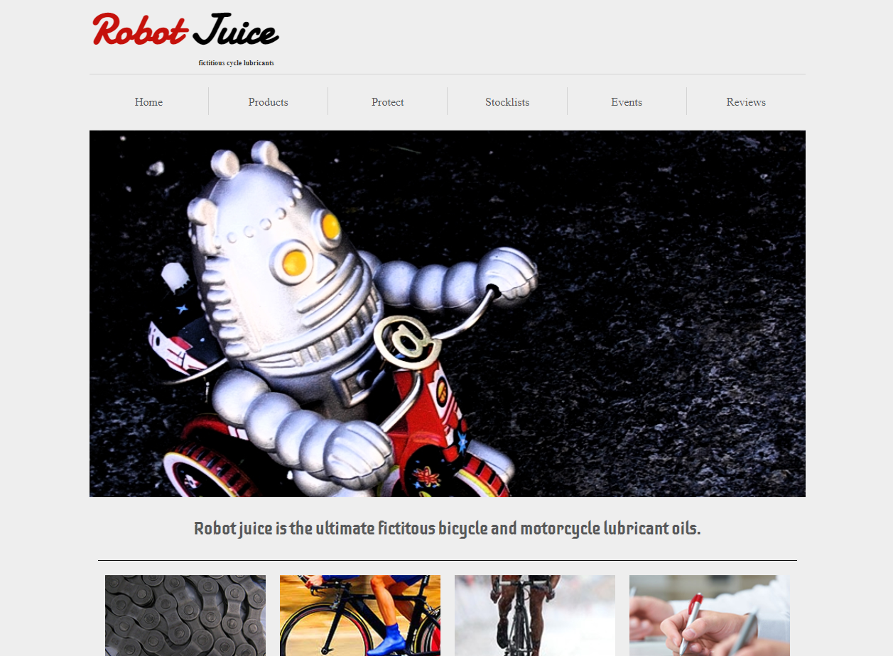
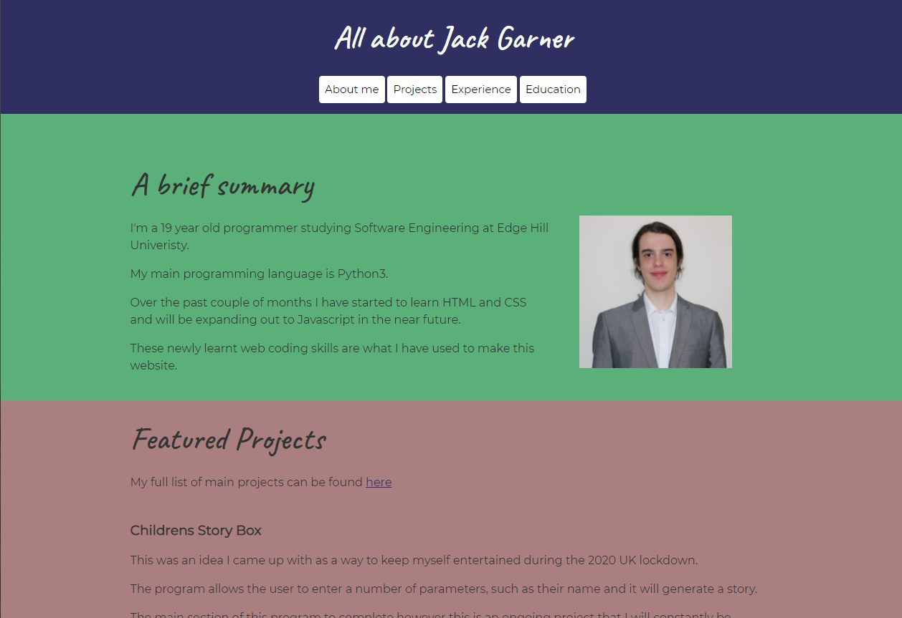
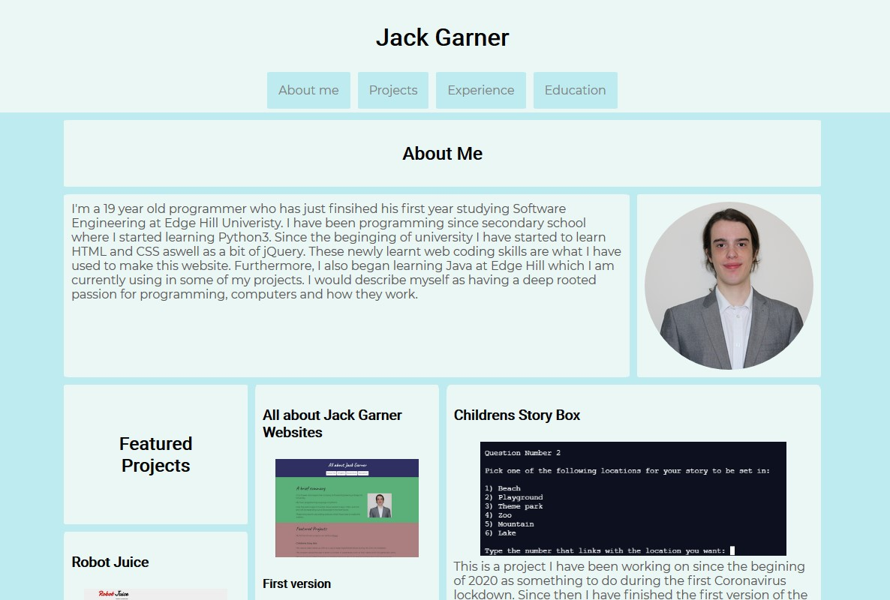
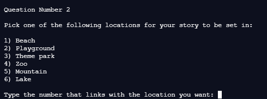
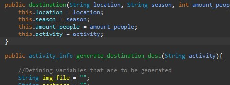

Projects
Here you will find all of my most recent projects plus some of my older projects that are still relevant
Robot Juice
HTML, CSS, JQuery
About the project
This website was part of my coursework for my web development module in the first year of my degree. It is a great demonstration of my HTML, CSS, and jQuery skills and is one of the most technically challenging sites that I have built. The website was built based on design documents that included screenshots of the layout and a colour palette.
What the website contains
The website is made up of two pages: a home page that houses general information about this fake company as well as an interactive competition and a static news section. The second page is a product page and this one is much more complex. It features multiple forms that the user would fill in to order the product if this was a real website as well as a comments section that pulls its data from an API using jQuery
Potential Improvements
If I was to spend more time on this project I would like to make more of the elements interactive and dynamically updating such as the news section on the homepage. I would also like things such as the competition to function correctly.

All about Jack Garner Websites
First version
HTML, CSS
About the project
I started working on this website to help me while learning HTML and CSS at university. I came up with the idea of a website that can be used to showcase myself and my work while taking part in a "LinkedIn Learn" course on CSS. I was taking this course to complement what I was learning at university and to get ahead on the work.
What the webtsite contains
The site contains multiple different pages each intended to display information that would traditionally live on a CV. However, this website is not intended to replace my CV as I will still be distributing it. On the site, you will find detailed reports of my recent and other relevant projects as well as all the information about my education and work experience. There is also an "About Me" section which not only contains details about me but also a personal bio so the user can get to know me better. The website was written mobile-first and has a completely responsive layout.
Intended users
The website is designed to be used by potential employers who want more detailed information than can be supplied through a cover letter and CV. However, I will still keep the website up to date with my current projects once I enter employment.
Second version
HTML, CSS
About the Project
I started the development of this site once I had finished my first year of uni with the intention of making a more modern version of the original that incorporates things such as CSS transitions and animations that I learnt after building the first version.
What the website contains
Information wise, this version of the website contains most of the information as the original site however this information is presented in a much more technically challenging way. Furthermore, I have tried to include a lot more images in this version.
Intended users
This website has the same intended uses as the original version of the site however this version is the one that will be used from now on.
Potential improvements
First, on mobile, the navigation menu can sometimes look cramped and messy. Therefore, I plan to implement some sort of, possibly Javascript based, burger menu for mobile devices.
Childrens Story box projects
First version
Python
About the project
This was an idea I came up with as a way to keep myself entertained during the 2020 UK lockdown. After planning the story using flowcharts, I began to research how I could make the program work as my original idea was to have the story be image-based. The project is written in Python3 as this is the language I have the most experience with
What the program does
The program generates a story for the user by asking them a series of questions. The user is firstly greeted with a welcome page where they will be offered to start. After this, they are asked their name and the name of a friend, as well as 5 multiple-choice questions. It then picks, at random, a few options such as what happens during the activity they selected. This random aspect means that even if you picked the same options twice the story will most likely be somewhat different.
The projects current state
The program has been completed and I don't intend to work on it any further as I will now focus my attention on the second java version.
Second version
Java
About the project
The basic idea of this version is the same as version one, however, with this version the aim is for this to be a full graphical user interface with plans to make static cartoon images that will be collated into a comic style page.
Future plans and potential improvements
There is the possibility of converting the program into an iOS and Android app.
The projects current state
The project is currently in the early stages of development, I am starting on the classes and code first and will start work on the art at a later date.
Train Information Machine
Python
About the project
The purpose of this program was to teach myself how to use APIs. I wanted to do this because there will probably be points in future projects where use of these will be needed. I'm currently still figuring out how to manage the json files that my requests get returned as.
What the program does
The user is given the option to input a trains UID (a number that every UK train service has a unique version of), the program will then output either the trains origin station information, its destination station information or the train's operating company based on what the user requests when the program starts. The program uses the RealTimeTrains open API however, a sign up is required to use it so it can generate you a username and password.
The projects current state
The program is not yet fully functional and the project is currently on hold while learn more about APIs
Future plans and potential improvements
In the future I would like the user to be able to track the total distance they have travelled on trains as the program being able to store past searches in a .CSV file for reference later.
21 Questions
Java
About the project
This projects purpose was to develop my first full program in Java, as I am just starting out with the language I needed to come up with a concept that I could do with my current knowledge but that could also be expanded apon in the future so that it wasn't too basic.
What the program does
Once the user has started the program it runs through 21 questions and asks the user to input an answer (either A, B or C). If the user gets the question correct it adds 1 to thier total score. Once all the questions have been answered a score between 0 and 21 is outputted based on the number of questions the user got correct. They are then given the option to view all the correct answers or exit.
Simple Calculator
Python Tkinter
About the project
I started this project as a way to learn how to make GUIs in Python3 using Tkinter.
What the program does
The program is a basic calculator that can add, subtract, multiply and divide. It uses a GUI consisting of buttons and a text input field. The program, currently, can only take in two numbers plus the mathematical operator
Future plans and potential imrprovements
AI would like to give the calculator more funcationality such as the ability to perform funcations such as square routing, super-script numbers and a memory option. Finally, I may port this project over to Java as a way to help me learn how to do GUIs in that language
Driver F1 points calculator
Python
About the project
Initally written as a lesson warm up task during A-Level, this project is included on this list as it is something I would like to expand apon in the near future as right now the project is in a pretty basic state at the moment
What the program does
The program is a for loop that loops for the number of races there are in that season (for this case it is 22. The user then inputs the position that they finished in that particular race. It then adds the corisponding number to a running total while also printing out the current average. Once the loop has finished the total points for the season will be printed.
OCR Tunez
Python
About the project
This project was my GCSE coursework and one of my first large projects. The idea was suppied by the exam board (OCR) which is where the name comes from. The idea for the program was to be a text based version of music streaming services like Spotify however actually playing/streaming music was outside of the scope of the coursework
What the program does
The user first has to sign into the program which uses a very basic .CSV file based system for storing and creating users. Once this is done the user can pick between several ways to play music such as a randomly shuffled playlist. After this the user can pick to listen to more musci or sign out.
Unfortunately, this project is currently unavalible for download